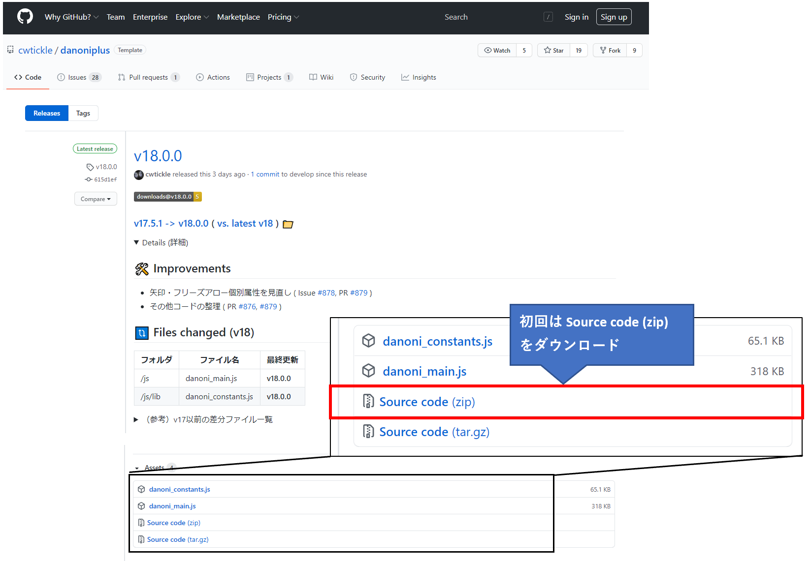
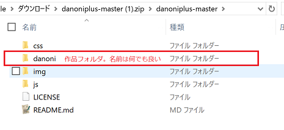

Releaseページより、「Source code」を選択してダウンロードします。

「js」「css」「img」「music」「skin」はこの構成で、階層を変えないでください。

| フォルダ名 | 内容 |
|---|---|
| js | Dan☆Oniのメイン。必須。 |
| css | Dan☆Oniの色変化や、Canvasのサイズ管理など。必須。 |
| img | Dan☆Oniの矢印やおにぎりの画像。必須。 |
| music | 楽曲用フォルダ。ここにmp3データ等を入れます。必須。 |
| danoni | 作品フォルダ。「danoni」の名前は作品名に合わせて自由に変えて良い。 同じ階層であれば、作品別にフォルダをいくつでも置いたり増やして良い。 （現行のswfの公開形式と同じ）。 作品フォルダ内に複数の作品用htmlを置くこともできる。 |
| skin | スキンファイル。設定するスキンに対応するcss, jsファイルが入る。 未設定の場合は、デフォルトスキンとしてこのフォルダを使用。 |
※作品フォルダは、jsやcss、musicフォルダと同じ階層に置く必要があります。
サブフォルダには対応していません。
※フォルダ内のファイルについてはソースの構成も必要に応じてご覧ください。
譜面ファイルについて、"&"を "|" で全置換します。
&left_data=230,250,270,...&down_data=250,290,310,...&|left_data=230,250,270,...|down_data=250,290,310,...|次の情報を譜面ファイルに付加します。
|musicUrl=nosound.mp3|adjustment=0|
adjustmentは、現行の譜面に対してどれだけ何フレーム早く/遅くするかを指定するかを設定します。
この後で修正します。
この状態で、譜面ファイルの中身を全て選択し、
サンプルページのソースにある下記の間に入れます。
<input type="hidden" name="dos" id="dos" value='＜ここに譜面ファイルを入れる＞'>
実際にはこんな感じになるはずです。改行OK。
この中で囲ったものがDan☆Oniのコア部分になります。
<input type="hidden" name="dos" id="dos" value='
|musicTitle=プチ・マギエ,Napi,http://mart.kitunebi.com/|
|difData=11W,Normal,3.5,x,10,5$11W,Hard,3.5,70,2,7|
|setColor=0x9999ff,0xccffff,0xffffff,0xffff99,0xff9966|
|frzColor=0x00ffff,0x6600ff,0xffff66,0xffff66|
|startFrame=0|adjustment=0|
|musicUrl=nosound.mp3|
|left_data=264,857,1704,1873,1916,2043|leftdia_data=603,920,1492,1619,4351|down_data=899,1471,1556,1958,2170|
|color_data=200,34,0xcc99ff,200,35,0x9966ff|
|tuning=ティックル,http://cw7.sakura.ne.jp/|
'>
<div id="canvas-frame" style="width:600px;margin:auto;">
</div>
サンプルのhtmlファイルを利用しない場合は、
以下の2行を<head>タグ内に入れてください。
<script src="../js/danoni_main.js" charset="UTF-8"></script>
<link rel="stylesheet" type="text/css" href="../css/danoni_main.css">
譜面ヘッダー中にある |musicUrl=nosound.mp3| を、実際のmp3ファイル名に変更してください。
その後、指定した音楽ファイル(mp3)を、「music」フォルダに入れてください。
この状態でhtmlファイルを開けば、一通り動作すると思います。
2.の状態では動作はしますが、ほとんどの場合タイミングがずれます。
下記の譜面ヘッダーadjustmentの数字を前後させることで、
タイミングを合わせることが可能です。(マイナス可)
使用頻度の高い譜面ヘッダーを下記に記載します。他については 譜面ヘッダー仕様を参照してください。
| 変数名 | 内容・使用例 |
|---|---|
| adjustment | 現行の譜面に対してどれだけ何フレーム早く/遅くするかを指定。 |adjustment=40| |
| endFrame | 楽曲終了時のフレーム数(分秒指定も可能)。 通常は楽曲データから取得するため不要だが、尺余りするときに使う。 |endFrame=6000| もしくは |endFrame=1:40| |
| fadeFrame | フェードアウトするタイミングのフレーム数(分秒指定も可能)。 譜面別に指定が可能で、$で区切る。 |fadeFrame=3600$7200| もしくは |fadeFrame=1:00$2:00\ |
| titlesize | タイトル画面の曲名の文字サイズを変更。枠から外れる場合に使用。 |titlesize=40| |
譜面ファイル内の半角シングルクォートについて
データを半角シングルクォートで括っているため、そのまま使えません。
*squo*を入れることで作品中、半角シングルクォートに置き換えられます。
その他の文字については譜面データにおける特殊文字の取り扱いをご覧ください。
「music」フォルダについて
.htaccess が使えるサーバであれば、入れておくことを推奨します。
以下のように指定します。
SetEnvIf Request_URI "\.(mp3|wav|ogg)$" deny_ref SetEnvIf Referer "cw7\.sakura\.ne\.jp" !deny_ref Order Allow,Deny Allow from all Deny from env=deny_ref
太字のところはサーバによって読み替えてください。「.」は「\.」で置き換えます。